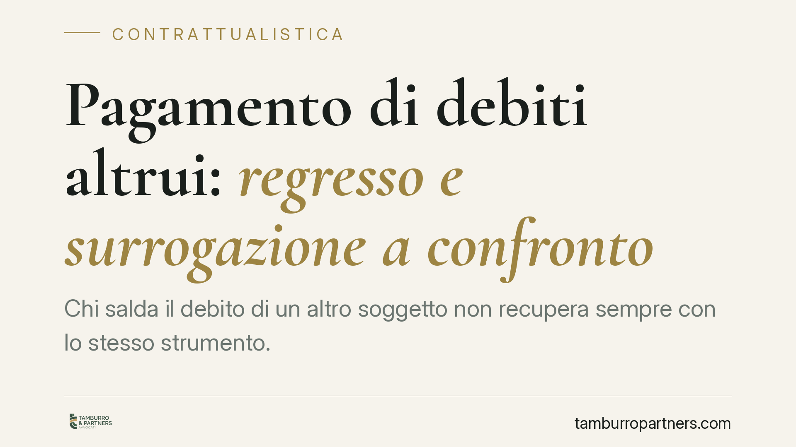

Pagamento di debiti altrui: regresso e surrogazione a confronto
Chi salda il debito di un altro soggetto non recupera sempre con lo stesso strumento. Regresso e surrogazione legale seguono regole diverse, con effetti rilevanti su garanzie e termini di prescrizione. La distinzione, al centro del dibattito giurisprudenziale, incide direttamente sulle strategie di recupero di garanti, imprese e assicurazioni. Comprenderla prima di pagare evita la perdita del credito.

Il problema: ho pagato per un altro, ora come recupero?
Accade spesso. Un fideiussore onora la garanzia, un condebitore versa l'intero importo, un'assicurazione indennizza il danneggiato. In tutti questi casi chi paga vanta una pretesa verso il debitore effettivo. Ma lo strumento per farla valere non è unico, e la scelta sbagliata può compromettere il recupero.
Le azioni sono due: il regresso e la surrogazione legale. Hanno presupposti, contenuti ed effetti differenti.
Inquadramento normativo
Il regresso è disciplinato, in materia di solidarietà, dall'art. 1299 del Codice civile: il condebitore in solido che ha pagato l'intero debito può ripetere dagli altri la parte di ciascuno. È un'azione autonoma, che nasce dal pagamento e dal rapporto interno tra i coobbligati.
La surrogazione legale è prevista dall'art. 1203, n. 3, del Codice civile a favore di chi, essendo tenuto con altri o per altri al pagamento del debito, aveva interesse a soddisfarlo. Qui il solvente subentra nella stessa posizione del creditore originario: acquisisce il credito con le garanzie, i privilegi e gli accessori che lo assistevano.
La differenza è sostanziale. Nel regresso si fa valere un diritto proprio, nuovo. Nella surrogazione si eredita il diritto del creditore pagato, con tutto ciò che vi era collegato.
Perché la distinzione conta
Il punto più delicato riguarda le garanzie e la prescrizione.
Chi agisce in surrogazione conserva le garanzie reali e personali che assistevano il credito originario: ipoteche, pegni, privilegi. Chi agisce in regresso, invece, dispone di un credito nuovo, tendenzialmente privo di quelle garanzie accessorie.
Sul termine di prescrizione occorre prudenza. Nel regresso il dies a quo (il giorno da cui il termine inizia a decorrere) si collega di regola al pagamento. Tuttavia il regime prescrizionale applicabile può dipendere dalla natura del rapporto sottostante: non è corretto assumere in ogni caso un termine decennale uniforme. La surrogazione, per contro, riprende il termine proprio del credito originario, già in corso al momento del pagamento.
Ne deriva una possibile divergenza nei tempi utili per agire. Un credito originario prossimo alla prescrizione, recuperato in surrogazione, offre una finestra temporale ridotta rispetto a quella che si avrebbe impostando un'autonoma azione di regresso.
Implicazioni pratiche
Per il fideiussore e il garante. La surrogazione nelle garanzie del creditore principale è spesso la via più efficace, perché permette di escutere i beni già ipotecati o pegnorati. Ma attenzione: si eredita anche lo stato della prescrizione in corso. Se il credito garantito era già maturo, il margine temporale può essere stretto.
Per le imprese. Nei rapporti tra coobbligati e nelle operazioni di gruppo, la qualificazione dell'obbligazione – a interesse comune oppure asimmetrica – orienta lo strumento disponibile. Documentare con precisione il titolo del pagamento e la ripartizione interna è decisivo per non vedersi contestare la pretesa.
Per le assicurazioni. Nell'indennizzo e nella successiva azione verso il responsabile, la surrogazione nei diritti dell'assicurato consente di avvalersi della posizione originaria. La verifica della prescrizione del credito dell'assicurato verso il terzo responsabile diventa un passaggio obbligato prima di agire.
Cosa fare in concreto
- Qualificate l'obbligazione prima di pagare. Stabilite se si tratta di un'obbligazione a interesse comune o asimmetrica: da questo dipende lo strumento esperibile.
- Conservate la prova del pagamento. Quietanze, bonifici e dichiarazioni del creditore sono la base di qualunque azione successiva, in regresso o in surrogazione.
- Verificate lo stato della prescrizione del credito originario. Se intendete surrogarvi, controllate da subito quanto tempo residua: potreste ereditare un termine già avanzato.
- Valutate la presenza di garanzie accessorie. Ipoteche, pegni e privilegi possono rendere la surrogazione nettamente più conveniente del regresso.
Una corretta qualificazione tecnica preliminare dell'obbligazione è il presupposto per scegliere l'azione più adeguata ed evitare la perdita del credito per decorso dei termini.
Disclaimer
Contributo informativo a cura di Tamburro & Partners Avvocati. Non costituisce parere legale.
Ogni contratto ha il suo equilibrio.
Se vuoi una revisione delle clausole o una redazione su misura, scrivi allo studio. Ti rispondiamo entro un giorno lavorativo.